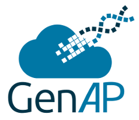

Genetics and Genomics Analysis Platform
Alternative to Galaxy:
UseGalaxy Canada
Alternatives to Datahubs:
Globus Collections
Alternatives to FileBrowsers:
Globus Collections
For questions or assistance, please reach out through our Contact Form
Finally, we want to thank you for choosing our platform to support your research endeavors. It has been a
pleasure serving you throughout these years.
Best regards,
The GenAP Team